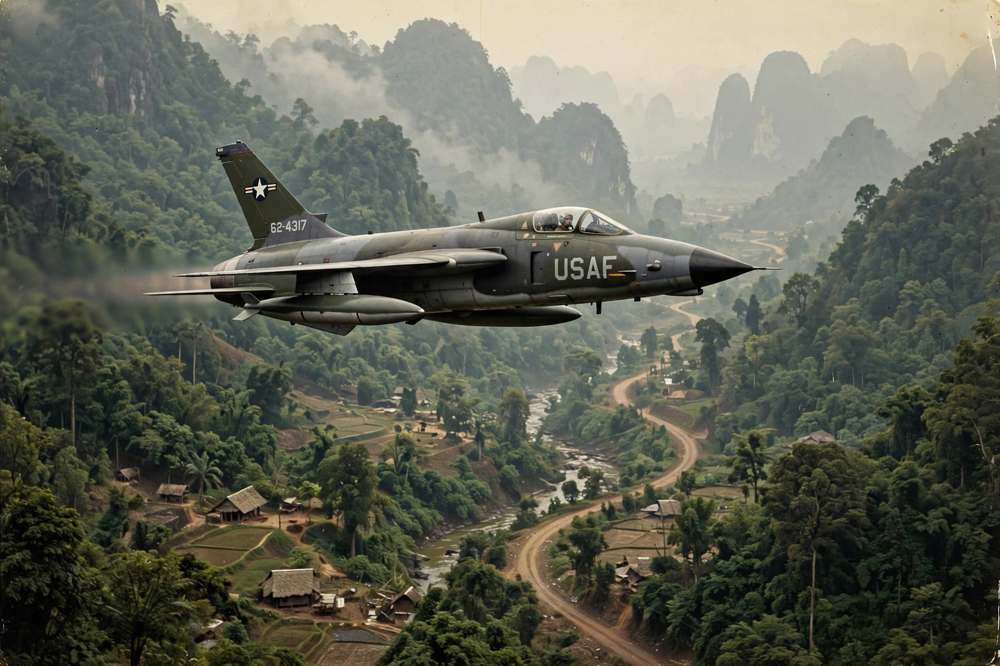

Operation Steel Tiger
| Operation Steel Tiger | |
| Date | April 1965 – November 1968 |
|---|---|
| Location | Southern Laos (the "panhandle") |
| Part of | Vietnam War; Laotian Civil War |
| Conducted by | United States Air Force and United States Navy |
| Objective | Interdict the Ho Chi Minh trail |

Operation Steel Tiger was a covert United States aerial interdiction campaign carried out from April 1965 to November 1968 during the Vietnam War. It targeted the Ho Chi Minh trail network through the panhandle of southern Laos, through which North Vietnam moved men and supplies to support the Viet Cong and People's Army operations in South Vietnam.
Background
Steel Tiger grew out of the earlier Operation Barrel Roll (in northern Laos) and was authorised alongside it as American combat involvement escalated in 1965. Because Laos was officially neutral under the 1962 Geneva Accords, the campaign was conducted covertly under the direction of the US ambassador in Vientiane.
Operations
US Air Force and Navy aircraft conducted armed reconnaissance and strike missions along the roads, fords and trans-shipment points of the trail, attacking truck convoys — usually moving at night — as well as storage areas and anti-aircraft positions. Forward air controllers, including the "Raven" and "Nail" FACs, directed strikes, and AC-47 and later AC-130 gunships patrolled the trail system at night.
Outcome
Despite flying hundreds of thousands of sorties and claiming the destruction of many thousands of trucks, the campaign failed to stop infiltration, which increased over the war. Steel Tiger was terminated in November 1968 when its areas and missions were absorbed into the larger Operation Commando Hunt.